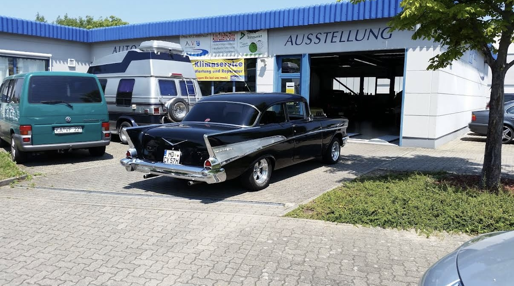
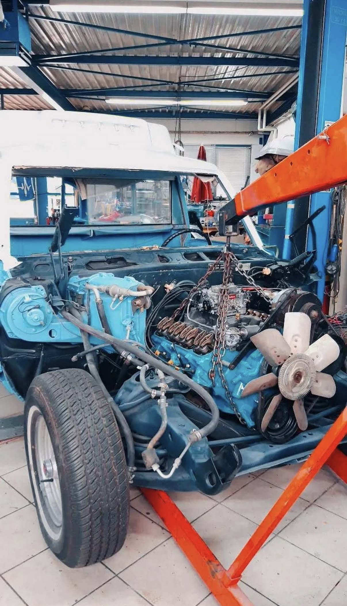
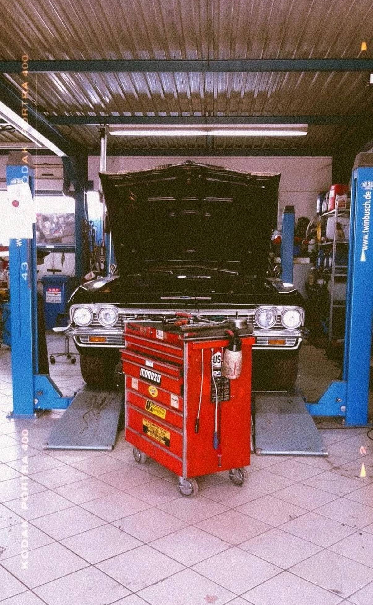
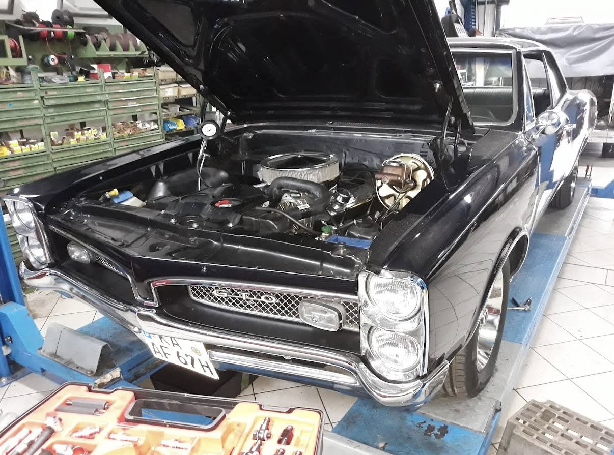

Von der ersten Anfrage bis zur Schlüsselübergabe — wir bieten alles rund ums amerikanische Fahrzeug aus einer Hand.

Unsere hauseigene Performance-Abteilung bietet individuelle Motoroptimierung für nahezu alle Hersteller. Egal ob Benziner mit Turbo, Saugmotor, Diesel-Turbo oder V8-Kompressor — jede Software-Datei wird individuell auf Ihr Fahrzeug programmiert.
Optimierung ohne Hardware-Umbau. Bis zu +20% Leistungszuwachs.
Mit ergänzenden Hardware-Upgrades. Spürbar mehr Durchzug und PS.
Vollausbau für maximale Leistung — motorsportnah und alltagstauglich.

Klassiker verdienen zweite Chancen. Wir restaurieren amerikanische Fahrzeuge aus den 50ern bis 90ern — technisch und optisch auf höchstem Niveau. Vom Teilrestauration bis zur kompletten Frame-off-Restaurierung.
Jede Restaurierung wird detailliert dokumentiert. Sie erhalten Fotos jedes Arbeitsschritts und einen lückenlosen Nachweis für Gutachter und Versicherungen.
Projekt besprechen →
US-Fahrzeuge haben oft spezielle Reifengrößen und -spezifikationen, die nicht jeder Anbieter kennt. Wir führen Reifenmontage, Auswuchten und Felgenservice speziell für amerikanische Fahrzeuggrößen durch.
Von Muscle-Car-Breitreifen bis zu modernen All-Season-Bereifungen für US-Pickups und SUVs — wir kennen die Dimensionen und haben die passenden Lösungen.
Termin vereinbaren →
Das ATF (Automatic Transmission Fluid) in deinem Automatikgetriebe altert mit jedem Kilometer. Wir führen eine vollständige Getriebeölspülung durch — inklusive Reinigung der Steuerplatine (Valve Body), Filterwechsel und 100% ATF-Austausch auch im Drehmomentwandler.
Ein normales Ablassen tauscht nur 30–40% des Öls. Unsere Spülmaschine ersetzt nahezu alles. Für alle US-Automatikgetriebe: GM, Ford, Chrysler, ZF — wir kennen die richtigen ATF-Typen.